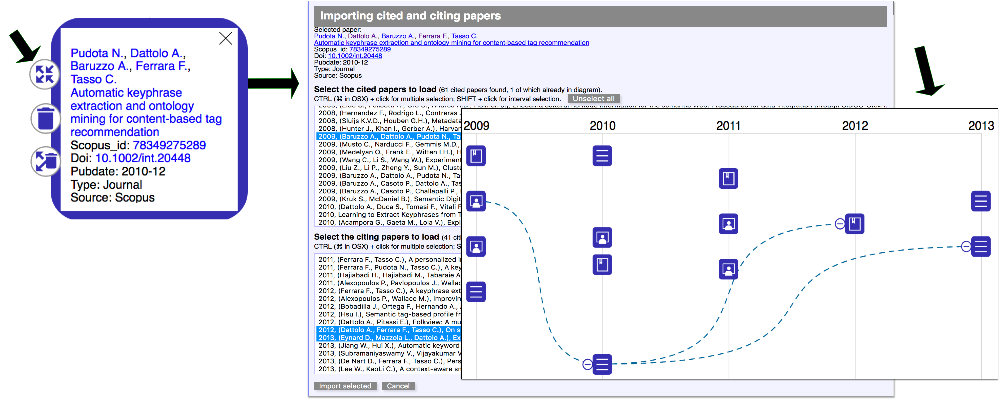
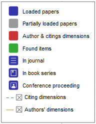
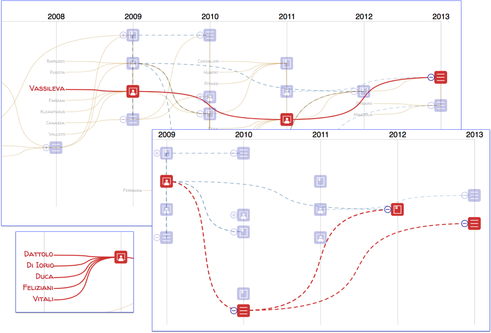
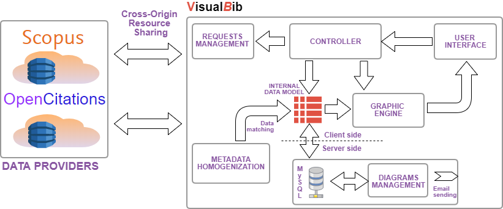
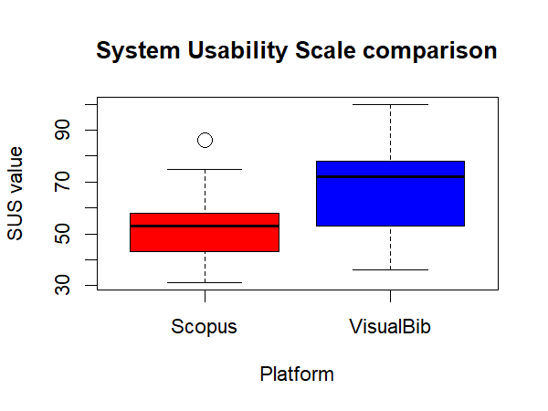
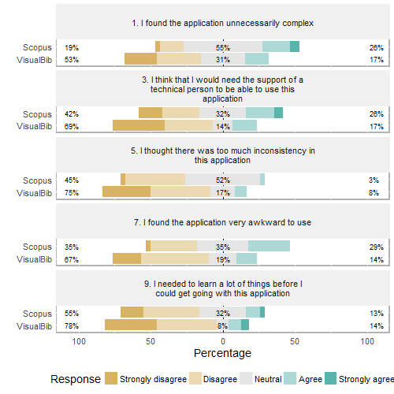
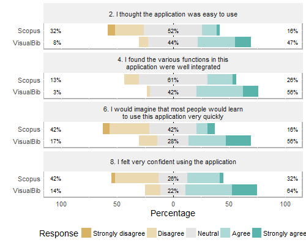
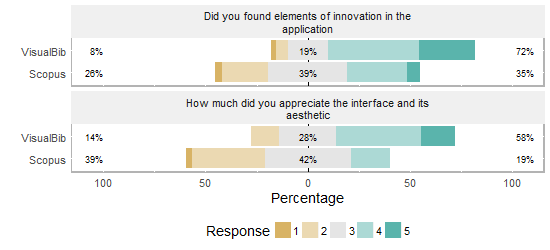

The amount of information provided by peer-reviewed scientific literature citation indexes such as Scopus, Web of Science (WOS), CrossRef and OpenCitations is huge: it offers users a lot of metadata about publications, such as the list of papers written by a specific author, the editorial and content details of a paper, the list of references and citations. But, for a researcher it could also be interesting to: extract these data in real time in order to create bibliographies, for example, by starting with a small set of significant papers or a restricted number of authors, progressively enriching them by exploring cited/citing references; dispose them in a graphical and aggregate representation; be able to easily share them with other interested researchers.
With these main intents, we modelled and realized VisualBib, a Web application prototype, which enables the user to select sets of papers and/or authors in order to create customized bibliographies, and visualize them in real time, aggregating data from different sources in a comprehensive, holistic graphical view.
The bibliographies are displayed using time-based visualizations, called narrative views, which contain explicit representations of the authorship and citing relations. These views may help users to: describe a research area; disseminate research on a specific topic and share personal opinions ; present or evaluate the entire production of a researcher or research groups in a fresh way.
Introduction
A search in scientific literature is traditionally carried out by specifying a set of words in specialized search engines. Generally a massive volume of documents are returned at every search and this involves considerable effort for the researcher in trying to map the results inside of a general vision of the topic. The results are generally presented in a long list that provides users with a poor understanding of the relationships between the documents, forcing them to play out complex heuristic strategies in order to rank the items and to build up a consistent mental vision of the research topic. Using citation indexes, such as Scopus, Web of Science (WOS), CrossRef or OpenCitations, makes it difficult to follow a paper over time, and identify the relations between papers of different authors, or have a quick overall idea of the production of an author.
In this paper we introduce VisualBib, a Web application prototype which interacts with external data providers in order to retrieve bibliographic metadata, offering researchers an interactive visual representation of the set of retrieved documents. The visual representation we have adopted is a time-based chart that shows the authors and citation relationships between papers, giving users the opportunity to manage a bibliography by deleting documents or adding new ones, starting with an author, a document id and subsequently exploring the cited/citing references for every paper.
We have called the proposed visual representations narrative view since the paths which link the papers and their authors, together with the explicit connections between citing and cited papers, illustrate the history of the authors’ production in a specific area; delineate the collaborations between them; say something about the influence that a paper has had on subsequent works.
The idea is to give users the opportunity to progressively build up a customized and shareable bibliography. In VisualBib, significant documents can be discovered by starting from the publications of given key authors or from a restricted set of well known papers, then analysing and expanding the cited references; alternatively, the user may explore citing references for discovering relevant documents, understanding the direction of the research and drawing inspiration for new projects.
VisualBib shows a bibliography inside of a holistic view which highlights the collaborations between authors and help to get answers to questions such as the following: who worked with whom in a certain period of time and on what; what are the sources of inspiration behind a specific paper or what subsequent papers have followed a specific work.
This paper is organized as follows: discusses related work, emphasizing open issues and challenges in graphical representation of bibliographies; presents our prototype, VisualBib, introducing its basic functionalities and user interface; proposes its architecture and some implementation details; the evaluation carried out as a comparative study between VisualBib and Scopus follows in .The final section discusses conclusions and future work.
Related work
In recent years, several tools have been proposed to graphically represent bibliographic data and to support researchers in analysing and exploring data and relationships.
Two recent surveys can be found in , where 109 different approaches, which emerged between 1991 and 2016, are analysed using two dimensions for the classification, data types and analysis tasks; and in , where authors present an interactive visual survey of text visualization techniques, which displays a total of 400 different techniques.
Some projects and tools emerged from the InfoVis2004 contest : for example, BiblioViz which integrates table and network 2D/3D views of bibliographic data; PaperLens where tightly coupled views across papers, authors, and references are presented in order to understand the popularity of a topic, the degree of separation of authors and the most cited papers/authors.
Other visual interfaces for bibliographic visualization tools have been more recently proposed: among them, CitNetExplorer provides the visualization of citation networks offering expansion and reduction operations and clustering of the publications in groups; PivotPaths uses a node-link representation of authors, publications, and keywords, all integrated in an attractive interface with smooth animations; JigSaw is a visual analytic system which provides multiple coordinated views of document entities with visual connections across the documents; PaperCube offers a suite of alternative visualizations based on graph, hierarchy, and timeline integrated into an analysis framework, although the project appears to have stopped in 2009. The genealogy of citation patterns, Citeology , connects titles of papers which are organized in a chronological layout, controlling the number of generations to display and the shortest path between two selected papers.
In spite of the great number of existing tools, we would like to highlight some open challenges and weaknesses in the apps which are currently available, and relative to the importance of:
creating a personal view of a bibliography, selecting authors and papers;
saving personal views and sharing them in write or only-read modalities;
providing a holistic narrative view of papers, authors and cited/citing relationships;
retrieving metadata from multiple online repositories and not from static datasets;
using an online, real-time Web app.
Our contribution focuses on these objectives and proposes an online Web application that distinguishes itself from the existing ones, for these primary features.
Basic functionalities and user interface of VisualBib
VisualBib is an online app prototype conceived for supporting researchers in the creation of bibliographies, starting from papers or authors of their interest; it is freely available for non commercial research and teaching purposes at http://sasweb.uniud.it/visualBib/. In the current version VisualBib retrieves data in real-time from the Scopus and OpenCitations platforms. For Scopus, being a commercial service, it is necessary to navigate in VisualBib from a subscriber's domain in order to get the required data from the Scopus Application Programming Interface (API).
The data providers available in the current prototype were chosen after evaluating the eligibility of the metadata provided by various data sources; we are planning, however, to integrate new citation indexes in future releases. shows a typical visual representation of a bibliography, generated by VisualBib, when searching for an author by their last name. In order to disambiguate between homonyms, the list of authors is enriched with their name, affiliation (if present and only in Scopus), subject areas (if present and only in Scopus), id, and ORCID (if present). Once the author is chosen, the user will see a temporally ordered list of his/her publications. The selection by the user of all (or part of) the publications, will allow him/her to visualize a narrative diagram, as shown at the bottom of .
A look of VisualBib interface: search of an author given the last name.
The narrative diagram is a 2-dimensional space: one dimension is time, arranged horizontally and discretized by years; the vertical dimension is spatial and is used to properly organize authors, papers and their relationships. The coloured, round-cornered square items (in blue and green in ) represent the publications retrieved from data providers.
The diagram includes the last names of the authors involved in at least one paper of the current set: each author is associated with a goldenrod line that connects all his/her papers, from the oldest to the newest, giving an indication of his/her professional path (clearly limited to the current set of imported publications) over the years.

Adding citing/cited relationships.
The cited/citing relationships between papers are not automatically retrieved, but must be explicitly requested for the single paper: clicking over a paper icon (in the example in , the last (bottom) paper of 2010), a pop-up window opens (see , top left) to show some bibliographic data, where each of the authors’ names, the title, the id and the DOI of the paper are links to dedicated Web pages. A click on the four-arrowed icon (see top left ) loads, in a separate form, the list of cited /citing papers (, center). Inside each selection list, all the cited/citing papers matching any paper already in the diagram, appear highlighted in blue. The users may select, from the two lists (cited/citing papers), the documents of their interest and import them (with the relative relations) in the diagram.
In the example of , the user chooses to import the three preloaded papers and, as shown on the right of the same , right, the cited/citing relations become visible as blue dashed lines. Due to the potentially high number of citations, the system offers the possibility to recursively hide all the citations of each paper through a minus icon situated near its left side.
Following the legend of , expanded in :
the three different icons associated to publications enable users to distinguish between three typologies of papers: journal papers; books or book chapters; conference or workshop proceedings. If the type is different or unknown, no specific icon is associated to the items;
the colour of the icons indicates the paper’s state: blue is associated to a completely loaded paper (all the available data and metadata have been loaded); gray indicates a partially loaded paper, which has been retrieved during a cited/citing search (this operation returns only a subset of paper’s metadata); red is used to emphasize semantic relationships during user interaction, as described later; and, finally, green marks the found papers of a textual search (in , they are the papers found looking for folksonomies);
the two toggle switches allow user to hide/show respectively the connections between cited/citing papers and those joining an author with his/her papers.

The legend.
Finally, by moving the cursor over an author name the application will emphasize, in red, all the relative papers in the current view ( - top: the author Vassileva); moving the cursor over a paper the application will emphasize in red all of its authors' last names ( - bottom left) and/or citing/cited connections ( - bottom right).

Focus on author(s) and citing/cited relations between papers.
VisualBib merges data from different sources: when loading a new paper or a citation from a data provider, a check is performed in order to verify whether it was already present in the bibliography. If available, the DOI code is used for the univocal match, regardless of its origin. If DOI is missing, a check is performed using the paper id specific to each data provider (for example the Scopus id or an url for OC). For the authors, the cross matching between the data providers is possible if the ORCID code is provided: in this case, all the papers of that author, regardless of their origin, are correctly connected together by a single path. In the opposite case, the internal author id of the specific data provider is used and the same author could appear more than once in the diagram, since an automatic univocal matching is not possible.
Architecture and Implementation
VisualBib is organized as a single page Web application, based on:
HTML5, CSS3 and SVG W3C standard languages;
D3js , an efficient framework for data and DOM manipulation, and visual element management;
AJAX techniques to perform Cross Origin Resource Sharing (CORS) calls and client-server interactions.
shows the architecture of VisualBib, and its main modules, described in next subsections 4.1-4.5.

The architecture of the VisualBib application.
Data providers
VisualBib retrieves data from two repositories, the well-known Scopus and the open access OpenCitations (OC) ; other repositories will be considered in future releases.
Scopus is the world's largest abstract and citation database of peer-reviewed research literature. It currently indexes more than 70 million items of bibliographic data, and is accessible programmatically via dedicated API, which offers 11 different query types , aggregated in four groups: data search, data retrieval, other metadata retrieval, author feedback. Furthermore, each query returns data in various forms, called views, organized in levels with each level providing a superset of the data exposed by the previous level; the access to the views is subject to restrictions due to service entitlements. To avoid misuse of data, the platform imposes some limitations including selective weekly limits in the number of API calls, in the number of results returned in the response and in the number of calls per minute. To access the service, it is firstly necessary to require a personal API Key which permits the app to overcome the imposed restriction of user agents in performing cross-origin HTTP requests. The platform manages both simple requests based on API key and preflighted requests which generate a secured auth-token for the subsequent main request.
The OpenCitations (OC) platform is the expansion of the Open Citations Corpus (OCC) , an open repository of scholarly citation data made available under a Creative Commons public domain. OCC is an ontology currently explorable through the use of SPARQL query language and provides accurate bibliographic references harvested from scholarly literature, that others may freely build upon, enhance and reuse for any purpose, without restriction under copyright or database law. OC aggregates different open access data sources and on December 25, 2017, it published 298,797 citing bibliographic resources, 6,488,914 cited bibliographic resources and 12,652,601 citation links. The data can be freely downloaded but we chose to harvest the repository using specific SPARQL queries through the API service made available by the platform .
Internal data model
For each bibliography, VisualBib manages an internal representation of significant metadata:
for papers: authors (with links), title (with link), publication year, abstract, subject areas, Scopus or OC ids (with links), DOI (as link), issn, references list. The links connect the metadata to the corresponding resource on the used repository (Scopus or OC);
for authors: first, middle and last name (with link), preferred name, affiliation, ORCID, Scopus or OC id, and the list of his/her papers loaded into the narrative view.
A suitable data structure , represented by two multiple lists, contains cross-references in order to replicate the many-to-many relations given by citations and authorships. The consistency of the structure is preserved during deletions of a single paper or groups of papers, the loadings of a new author’s papers and cited/citing references.
Requests management, metadata homogenization and controller
The data retrieval procedures from the two repositories differ substantially: although the availability of a common format for the data interchange (JSON), the typologies and the numbers of queries needed to get the same piece of information (for example the list of publications of an author or the paper metadata including cited/citing references) are not comparable.
The request management module prepares the correct sequence of queries and manages the responses and the error conditions.
Due to the asynchronous nature of the AJAX calls, each query must be executed from the listen function of the previous call. Furthermore, in case of fragmented responses, due to the existing limits on the number of results per single request, the internal retrieve loop must be managed through recursive functions to assure that the next fragment is requested after receiving the previous one. The actions to be taken at the end of the process can be triggered only in the inner execution of the function, when the complete data transfer condition is observed.
The metadata homogenization module:
handles the data received from each repository;
carries out the necessary conversions of format to make the data compatible with the internal data model;
performs the match of the incoming data, in order to map new papers and authors to those already present in the internal data model;
builds and shows suitable forms to let the users choose the set of papers and citations to import into the current bibliography;
merges the new items into the internal data model and creates new data connections according to the detected authorship and citing relations.
The AJAX requests are triggered by the following user actions, managed by the controller module:
search of an author given the last name. After sending the query, each fragment, received from the chosen data provider, is merged in the ordered list of authors with the same last names; after user disambiguation, the list of author publications is retrieved and visualized following the steps shown in ;
search of an author given the ORCID, Scopus id or a specific url of the OC ontology. In this case, the system will query the data provider to retrieve the list of all the papers of a specific author. The list is compared with the internal data model in order to recognize which papers are already loaded in the current bibliography and which are new; a selection form, where existing papers are properly highlighted, is then presented to the user (, top right);
search of a paper given its DOI or Scopus id. In this case, the system verifies the existence of the requested paper in the selected data provider and subsequently retrieves all the available metadata, including the information about cited/citing papers. Each cited/citing paper is compared with the current set in order to recognize possible matching papers. Then a selection form is presented to the users to allow them the selection of the papers to import ( - center).
Graphic engine and user interface
The graphic engine maps the internal data model into an interactive visual representation, called narrative view; examples are visible in previous , , .
The scale of the axes is dynamically computed at every change in the bibliography in order to cover, respectively, the entire temporal span and the maximum number of items per column.
The positioning of the items along the vertical dimension is critical for a proper interpretation of the information in the diagram; and a specific algorithm has been designed in order to achieve:
no overlapping of the items in the same column;
a balanced distribution of the paper icons along the vertical dimension;
the correct positioning of the authors’ labels on the immediate left of their older paper, in correspondence to the previous year;
a regular space distribution between papers and authors’ labels in every year column.
Server side management
In order to store and retrieve user generated bibliographies, VisualBib includes a server side module, the diagram management, equipped with a MySql database server and a Php interpreter. User diagrams are described by title, content represented in JSON format, email address relative to the owner and two unique urls: every time a new bibliography is saved (clicking on Save on cloud button in ), the user is asked to specify an email address; the system generates a couple of unique urls for future accesses and/or for sharing with other users in both read-write and read-only modalities. The users may request to receive by email the list of their saved bibliographies, clicking on the ‘List my bibliographies’ button in .
VisualBib also has a simpler mechanism (activatable by clicking on ‘Save on localstorage’ button in ) to save a bibliography on client-side, into the localstorage of the browser: it is a permanent (but erasable) space which is not shareable, both fast and useful for frequent savings.
Evaluation
The evaluation was conducted as a comparative study between VisualBib and Scopus, with the aim of collecting user opinions and feelings after experiencing the platform by means of some search activities described later. For the comparative evaluation, Scopus was chosen in order to evaluate two different search approaches to exactly the same data source. It is important to clarify that the activities performed by the participants involved a subset of the functionalities of the two platforms; for this reason, the SUS values referred only to the considered aspects.
In particular, we intended to evaluate:
the perceived usability level of the application using the well-known SUS (System Usability Scale) questionnaire ;
the feelings about the aesthetic and the innovative solution of the user interface, using 5-likert scales.
Study design and procedures
The participants were recruited on a voluntary basis among undergraduate students, researchers and professors of the University of Udine and other universities. In total 67 participants were recruited (37 F, 30 M): 31 of them (21 F, 10 M) evaluated the Scopus platform and the remaining 36 (16 F, 20 M) our application VisualBib.
We prepared two short presentations (about 15 slides each) of the two platforms and distributed them to each participant in order to illustrate the interfaces and the basic features available in each application.
For the undergraduate students, with no significant experience in bibliographic search, we organized a live presentation to illustrate both platforms, to clarify technical terms and to familiarize them with the interfaces.
Before taking the survey, we asked the participants to perform 12 activities consisting of specific bibliographic searches in order to guide them in interacting with the platform under test. The activities were the same for the two platforms, took about 20-30 minutes to be carried out and consisted in searching for the publications of some authors, counting the papers written in collaboration during a time interval, individuating the type of each publication, performing textual search in the metadata, searching for specific citing and cited papers and the relative authors. To be sure that all the activities were executed correctly by all the participants, we asked them to fill in the answers of each activity on an online form which provided the users with negative feedback in case of wrong answers, forcing them in a loop until the right answer was acquired.
For the SUS evaluation, we adopted an Italian version of the standard SUS questionnaire, leaving out the first question: “I think that I would like to use this system frequently” . This choice comes from observing that the systems under study would probably be used infrequently by the participants and the presence of that question would distort the score and probably confuse the participants.
We will refer to this questionnaire as SUS-01: like the SUS, it is a mixed-tone questionnaire but, having dropped the first question, the odd-numbered items now have a negative tone and the even-numbered items have a positive tone.
Finally, we asked the user to evaluate on a likert scale from 1 (not at all) to 5 (very much):
the presence of innovative solutions in the application;
the level of appreciation of the user interface and its aesthetic.
Data Analysis and results
Lewis and Sauro studied the effects of dropping an item from the standard SUS questionnaire: specifically, when leaving out the first question, they measured a mean difference from the score the full SUS survey of -0.66 points, considering a 95% confidence interval.
Furthermore, we were interested in estimating the difference between the SUS score of the two platforms more than in absolute values.
The value of SUS-01 was computed for each participant with the formula: SUS_{-01}=\left (\sum_{k=0}^{4}\left ( 5-A_{2k+1} \right )+\sum_{k=1}^{4}\left ( A_{2k} -1\right ) \right )*\frac{100}{36}
The distribution of SUS-01 is summarized, for the two samples, in and in the graph of .
Platform
Sample size
Min
1st Qu.
Median
Mean
Std. dev.
3rd Qu.
Max
Scopus
31
31.00
43.00
53.00
52.39
12.76
58.00
86.00
VisualBib
36
36.00
53.00
72.00
68.53
17.20
78.00
100.00
The distributions’ parameters of the two samples.

The evaluated SUS-01 distributions for the two platforms.
We noted that the VisualBib’s SUS-01 results present a mean value which is significantly higher in comparison with Scopus and a wider distribution. The absolute values of SUS for both platforms are relatively low and this fact probably reflects the difficulty of some of the participants in dealing with bibliographic search tasks.
The distributions of the single SUS-01 answers, grouped per platform, are visible in the following Figures 7 and 8; for an easier data reading, in , we reported the odd questions (negative tone questions), while in the even questions (positive tone ones).

SUS-01: the comparative distributions of answers to the odd questions (negative tone questions) for the two platforms.

SUS-01: the comparative distributions of answers to the even questions (positive tone questions) for the two platforms.
Analysing the answers to the single questions, we always observed a positive difference in scores in favor of VisualBib, more pronounced in questions 1, 2, 6, 7, 8. This seems to underline the intuitiveness of the simpler interface of VisualBib which presents a smaller number of data and details on the page.
shows the distributions of the user opinions, grouped per platform, about the overall application and interface on a likert scale from 1 (not at all) to 5 (very much).

The evaluation of the overall application.
Also in this case the results encouraged us to work on the creation and development of this new app.
Conclusions and Future Work
The user’s experience during the search and building up customized bibliographies can often be unsatisfactory for many reasons. In this paper we have identified some critical aspects of this and have proposed a prototype of a Web application which offers some original features to support the researchers in creating and refining a personal bibliography around an initial set of papers and authors. The system assists the user in creating a holistic view of a bibliography, making the relationships between papers and authors visible and easily expanding them through the exploration of cited/citing papers without losing the overview of the entire bibliography.
The partial user evaluation carried out, although still incomplete, highlights some interest on the part of the user community for interactive visual representations of data, which has encouraged us to propose new applicable models and investigate how they may help the users in reducing the cognitive overload and gathering, at a glance, significant relationships.
We are currently extending the user evaluation to further aspects besides usability, and are studying how visualization influences the user’s effort to carry out specific search goals and the time to perform them.
Future work will involve improvements on VisualBib and the introduction of new features i.e. we plan to implement the import and export of papers using the Bibtex format, to provide the data regarding the papers’ editing history so as to manage publications not found in current data providers, to expand the list of the repositories to query, and to experiment new forms of visual representations in order to improve the harvesting of bibliographic information.
Acknowledgments
We would like to thank Meshna Koren for confirming the Elsevier interest in our project and for having enabled us to use the Scopus API, applying specific settings; Silvio Peroni, for having enthusiastically supported us on many occasions during the implementation of the remote access procedures relative to OpenCitations repository.
References
P. Federico, F. Heimerl, S. Koch, S. Miksch.(2017). A survey on visual approaches
for analyzing scientific literature and patents. IEEE Transactions on Visualization and Computer Graphics 23:(9), pp. 2179–2198, doi: 10.1109/TVCG.2016.2610422.
K. Kucher, A. Kerren. (2015). Text visualization techniques: Taxonomy, visual
survey, and community insights. Proceedings of the 2015 8th IEEE Pacific Visualization Symposium - PacificVis 2015, Hangzhou, China, April 14-15 2015, Vol. 2015-July, pp. 117–121, doi: 10.1109/PACIFICVIS.2015.7156366.
Z. Shen, M. Ogawa, S. T. Teoh, K.L. Ma. (2006). Biblioviz: A system for visu
alizing bibliography information. Proceedings of the 2006 Asia-Pacific
Symposium on Information Visualisation - APVis ’06, Tokyo, Japan, February 1-3 2006, Volume 60, pp. 93–102.35, Australian Computer Society, Inc.. http://dl.acm.org/citation.cfm?id=1151903.1151918
B. Lee, M. Czerwinski, G. Robertson, B. B. Bederson. (2005). Understanding research trends in conferences using paperlens. Proceedings of the International Conference on Human Factors in Computing Systems - CHI ’05 Extended Abstracts, Portland, Oregon, USA, April 2-7 2005, pp. 1969–1972, doi: 10.1145/1056808.1057069.
N. van Eck, L. Waltman. (2014). Citnetexplorer: A new software tool for analyzing
and visualizing citation networks. Journal of Informetrics 8:(4), pp. 802–823, doi: 10.1016/j.joi.2014.07.006.
M. Dork, N. Henry Riche, G. Ramos, S. Dumais. (2012). Pivot paths: Strolling
through faceted information spaces. IEEE Transactions on Visualization and Computer Graphics 18:(12), pp. 2709–2718.
C. Görg, Z. Liu, J. Kihm, J. Choo, H. Park, J. Stasko. (2013). Combining computational analyses and interactive visualization for document exploration and sensemaking in Jigsaw. IEEE Transactions on Visualization and Computer Graphics 19:(10), pp. 1646–1663,
doi: 10.1109/TVCG.2012.324.
P. Bergström, D. C. Atkinson. (2009). Augmenting the exploration of digital libraries with web-based visualizations. Proceedings of the Fourth International Conference on Digital Information Management - ICDIM 2009, Ann Arbor, Michigan, USA, November 1-9 2009, pp. 1–7, doi: 10.1109/ICDIM.2009.5356798.
J. Matejka, T. Grossman, G. Fitzmaurice, Citeology: Visualizing paper genealogy. Proceedings of the International Conference on the Human Factors in Computing Systems - CHI 2012, Austin, TX; United States; May, 5-10 2012, pp. 181–189,
doi: 10.1145/2212776.2212796.
D3: Data Driven Documents. https://d3js.org/ (last visited, October, 23 2017).
Dattolo, A. and Luccio, F.L. (2009).
A state of art survey on zz-structures. Proceedings of 1st Workshop on New Forms of Xanalogical Storage and Function, Held as Part of the ACM Hypertext 2009, Turin, Italy, June, 29 2009. CEUR Workshop Proceedings, vol. 508, pages 1-6.
Dattolo, A. and Luccio, F.L. (2009).
A formal description of zz-structures. Proceedings of 1st Workshop on New Forms of Xanalogical Storage and Function, Held as Part of the ACM Hypertext 2009, Turin, Italy, June, 29 2009. CEUR Workshop Proceedings, vol. 508, pages 7-11.
J. Brooke. (2013). SUS: a retrospective. Journal of usability studies 8:(2), pp. 29–40.
J. R. Lewis, J. Sauro. (2017). Can I leave this one out? The effect of dropping an
item from the SUS. Journal of Usability Studies 13:(1), pp. 38-46.